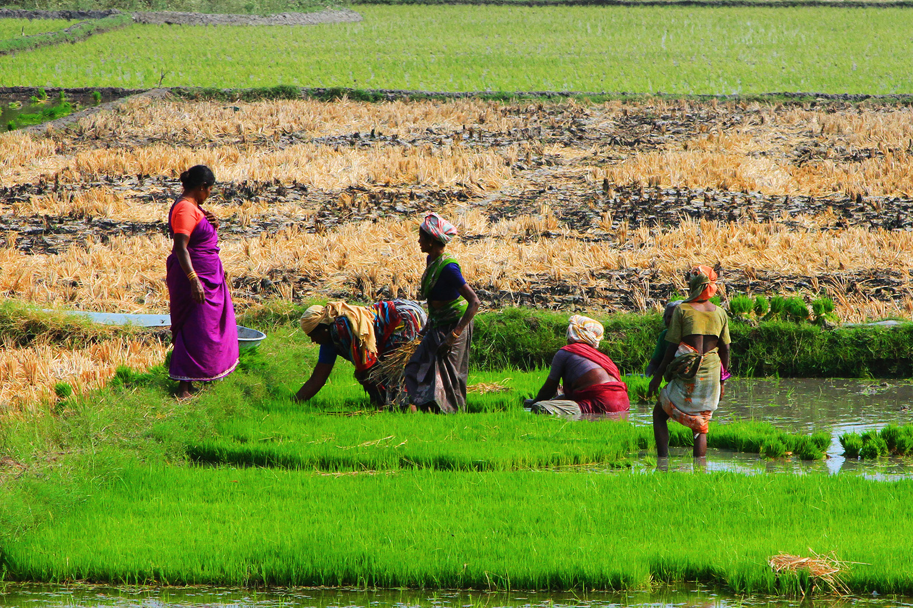

ENHANCING THE PRODUCTION SYSTEM OF CERTIFIED VEGETABLE SEEDS IN SRI LANKA!
Plantwise is a global programme that delivers advice to farmers on any problem affecting any crop. Generally government and non-government organisation extension workers provide advice through a network of plant clinics throughout the country. These run at regular hours in accessible places for farmers to attend and ask questions about their plant’s health. The programme draws its concept from human and animal health care, where clinics provide the forum for an initial contact between patient and health-care worker. We propose to use data from the Plantwise programme Sri Lanka to consider whether the quality of the advice and service given to male and female farmers by male and female extension workers at plant clinics differs. Plantwise is well established in Sri Lanka (since 2013). There are plant clinic networks and many trained plant doctors in both countries, as well as data management systems that ensure plant clinic data are entered into a centralised database, meaning there were sufficient data records to perform an analysis of both technical and service quality.
